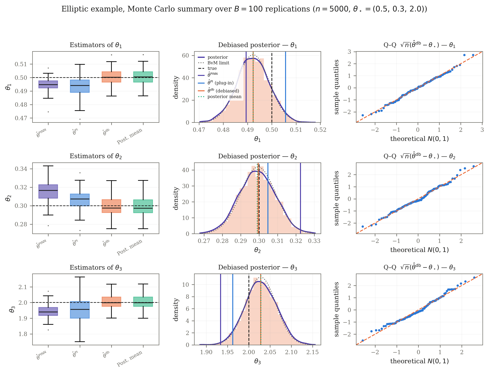

Overview
Many systems in the physical and environmental sciences are described by partial differential equations (PDEs) whose coefficients are unknown: a diffusion rate, a reaction constant, a source term. What we observe is a limited number of noisy measurements of the solution. The inverse problem is to recover the unknown parameters from these measurements, and to say how certain we are about them.
Physics-informed neural networks (PINNs) have become a popular tool for this task: a neural network approximates the PDE solution, and is fitted both to the data and to the equation itself. PINNs often work remarkably well in practice, but their statistical behavior is not well understood. This project develops the statistical theory of PINN-based estimation for PDE-constrained inverse problems, and uses it to design estimators with better guarantees.
A running example
Consider the heat equation \(u_t - \theta\, u_{xx} = 0\) on a spatial interval, with known initial and boundary conditions and an unknown diffusion coefficient \(\theta\). We observe \(n\) noisy measurements \(y_i = u(t_i, x_i) + \varepsilon_i\) of the solution at scattered points in space and time, and want to estimate \(\theta\). More generally, we study equations of the form \(\mathcal{H}_0 u + \theta^\top \mathcal{H}_1 u = f\) that are linear in their parameters, a class that includes many linear and nonlinear PDEs.
Questions we study
- How fast do PINN-based estimators of the PDE solution and of its parameters converge as the number of measurements grows?
- Can we estimate the parameters at the parametric \(\sqrt{n}\) rate, even though the neural network itself converges more slowly?
- How do we obtain valid uncertainty quantification, both frequentist and Bayesian?
Estimation rates for Bayesian PINNs
In the first paper, we study a Bayesian PINN estimator of the solution of a PDE from \(n\) independent noisy measurements. When the PDE admits a classical solution that is differentiable to order \(\beta\), we show that the mean square error of the Bayesian posterior mean is of order \(n^{-2\beta/(2\beta+d)}\). We also establish a convergence rate for the unknown coefficients, which depends on the order of the differential operator, and validate the theory through simulations.
Y. Sun, D. Mukherjee, Y. Atchade. On the estimation rate of Bayesian physics-informed neural networks for inverse problems. Bernoulli (to appear). arXiv:2406.14808
Root-\(n\) inference via debiasing
Plug-in estimators of the PDE parameters inherit the slow convergence of the neural network, which makes them biased and inefficient. In the second paper, we propose a two-step debiased estimator that adds a correction based on the influence function. The resulting estimator is \(\sqrt{n}\)-consistent and asymptotically normal, without requiring the network to be undersmoothed. We extend the approach to Bayesian inference through a debiased quasi-likelihood and prove a Bernstein–von Mises theorem, so that credible sets have valid frequentist coverage. Along the way, we derive near-minimax rates for neural-network estimation of regression functions and their derivatives in Sobolev spaces.
Y. Atchade, D. Mukherjee. PDE-constrained inverse problems at the root-n rate via debiased physics-informed neural networks. Preprint (2026). arXiv:2609.12301
Numerical examples
The figure below comes from an elliptic (diffusion) example with three unknown parameters, \(\theta_\star = (0.5, 0.3, 2.0)\), repeated over \(B = 100\) simulated datasets of \(n = 5000\) measurements. The PINN estimator \(\widehat\theta^{\mathrm{PINN}}\) and the plug-in estimator \(\widehat\theta^{\mathrm{PI}}\) remain visibly off-center. The debiased estimator \(\widehat\theta^{\mathrm{db}}\) and the debiased posterior mean are centered on the truth, the debiased posterior agrees with its Bernstein–von Mises limit, and the Q–Q plots confirm the normal approximation. Click the figure to view it at full size.

Team
- Yves Atchade
- Debarghya Mukherjee
- Yi Sun